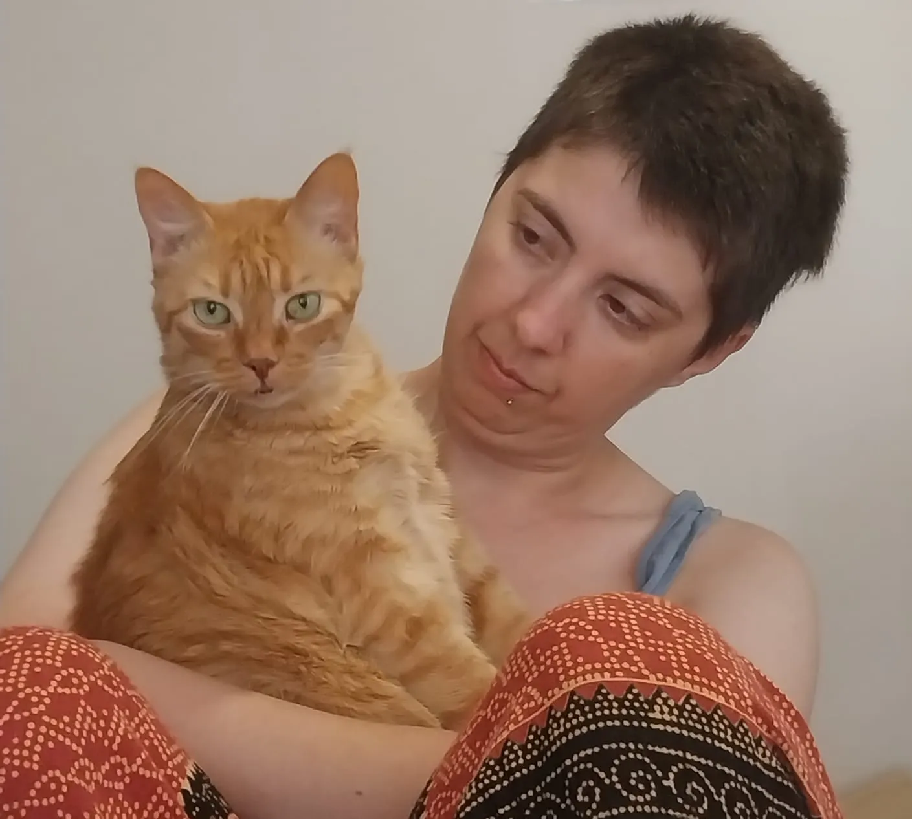

🎬 Películas favoritas
Shrek (2001)
Her (2013)
El código enigma (2014)
💿 Discos favoritos
24/7
Mercuriales
Nada
Coiffeur
Fallen
Evanescence
Sobre mí
Hobbies
Nadar
Hacer jueguitos
Leer
Algo sobre mí
Soy le humane de Ridikulah, un gato naranja fan de las videollamadas. Soy docente ad honorem en calidad de ayudante alumne en la Universidad Nacional de Córdoba e integrante de un equipo de investigación. Trabajo como SysAdmin pero me interesa dedicarme al área de datos; actualmente me encuentro estudiando una diplomatura de análisis de datos para el Agro. Además de mis hobbies, disfruto mucho jugando con mi gato (que también es mi jefe) e investigando/curioseando sobre tecnología. Hago jueguitos como hobbie en el marco de distintas Game Jams